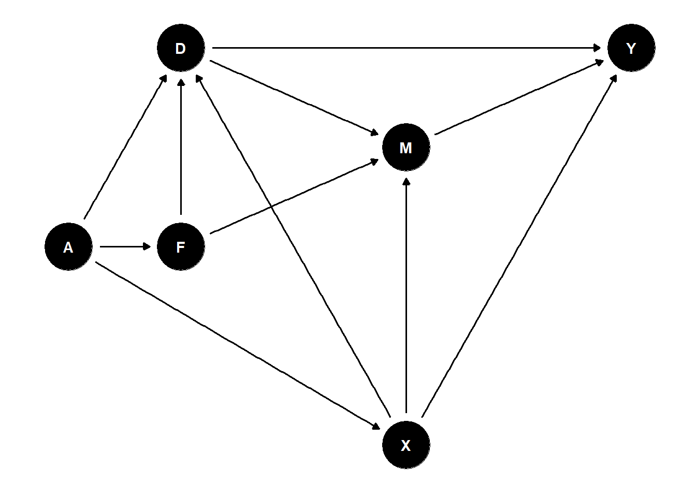

Chapter 12 Causal Identification in DAGs using Backdoor and Swigs, Equivalence Classes, Falsifiability Tests
# loading package
library(dagitty)## Warning: package 'dagitty' was built under R version 4.0.5library(ggdag)## Warning: package 'ggdag' was built under R version 4.0.5## Loading required package: ggplot2##
## Attaching package: 'ggdag'## The following object is masked from 'package:stats':
##
## filter
12.1 Graph Generation and Plotting
The following DAG is due to Judea Pearl
#generate a couple of DAGs and plot them
G = dagitty('dag{
Z1 [pos="-2,-1.5"]
X1 [pos="-2,0"]
Z2 [pos="1.5,-1.5"]
X3 [pos="1.5, 0"]
Y [outcome,pos="1.5,1.5"]
D [exposure,pos="-2,1.5"]
M [mediator, pos="0,1.5"]
X2 [pos="0,0"]
Z1 -> X1
X1 -> D
Z1 -> X2
Z2 -> X3
X3 -> Y
Z2 -> X2
D -> Y
X2 -> Y
X2 -> D
M->Y
D->M
}')
ggdag(G)+ theme_dag()
12.2 Report Relatives of X2
print(parents(G, "X2"))## [1] "Z1" "Z2"print(children(G, "X2"))## [1] "D" "Y"print(ancestors(G, "X2"))## [1] "X2" "Z2" "Z1"print(descendants(G, "X2"))## [1] "X2" "Y" "D" "M"
12.3 Find Paths Between D and Y
paths(G, "D", "Y")## $paths
## [1] "D -> M -> Y"
## [2] "D -> Y"
## [3] "D <- X1 <- Z1 -> X2 -> Y"
## [4] "D <- X1 <- Z1 -> X2 <- Z2 -> X3 -> Y"
## [5] "D <- X2 -> Y"
## [6] "D <- X2 <- Z2 -> X3 -> Y"
##
## $open
## [1] TRUE TRUE TRUE FALSE TRUE TRUE
12.4 List All Testable Implications of the Model
print( impliedConditionalIndependencies(G) )## D _||_ X3 | Z2
## D _||_ X3 | X2, Z1
## D _||_ X3 | X1, X2
## D _||_ Z1 | X1, X2
## D _||_ Z2 | X2, Z1
## D _||_ Z2 | X1, X2
## M _||_ X1 | D
## M _||_ X2 | D
## M _||_ X3 | Z2
## M _||_ X3 | X2, Z1
## M _||_ X3 | X1, X2
## M _||_ X3 | D
## M _||_ Z1 | X1, X2
## M _||_ Z1 | D
## M _||_ Z2 | X2, Z1
## M _||_ Z2 | X1, X2
## M _||_ Z2 | D
## X1 _||_ X2 | Z1
## X1 _||_ X3
## X1 _||_ Y | D, X2, X3
## X1 _||_ Y | D, X2, Z2
## X1 _||_ Y | D, X2, Z1
## X1 _||_ Z2
## X2 _||_ X3 | Z2
## X3 _||_ Z1
## Y _||_ Z1 | X1, X2, Z2
## Y _||_ Z1 | D, X2, Z2
## Y _||_ Z1 | X1, X2, X3
## Y _||_ Z1 | D, X2, X3
## Y _||_ Z2 | X2, X3, Z1
## Y _||_ Z2 | X1, X2, X3
## Y _||_ Z2 | D, X2, X3
## Z1 _||_ Z2
12.5 Identification by Backdoor: List minimal adjustment sets to identify causal effecs \(D \to Y\)
print( adjustmentSets( G, "D", "Y" ) )## { X2, X3 }
## { X2, Z2 }
## { X2, Z1 }
## { X1, X2 }
12.6 Identification via SWIG and D-separation
SWIG = dagitty('dag{
Z1 [pos="-2,-1.5"]
X1 [pos="-2,0"]
Z2 [pos="1.5,-1.5"]
X3 [pos="1.5, 0"]
Yd [outcome,pos="1.5,1.5"]
D [exposure,pos="-2,1.5"]
d [pos="-1, 1.5"]
Md [mediator, pos="0,1.5"]
X2 [pos="0,0"]
Z1 -> X1
X1 -> D
Z1 -> X2
Z2 -> X3
X3 -> Yd
Z2 -> X2
X2 -> Yd
X2 -> D
X3-> Yd
Md-> Yd
d-> Md
}')
ggdag(SWIG)+ theme_dag()
12.7 Deduce Conditional Exogeneity or Ignorability by D-separation
print( impliedConditionalIndependencies(SWIG)[5:8] )## D _||_ Yd | X2, X3
## D _||_ Yd | X2, Z2
## D _||_ Yd | X2, Z1
## D _||_ Yd | X1, X2
12.8 Print All Average Effects Identifiable by Conditioning
for( n in names(G) ){
for( m in children(G,n) ){
a <- adjustmentSets( G, n, m )
if( length(a) > 0 ){
cat("The effect ",n,"->",m,
" is identifiable by controlling for:\n",sep="")
print( a, prefix=" * " )
}
}
}## The effect D->M is identifiable by controlling for:
## * {}
## The effect D->Y is identifiable by controlling for:
## { X2, X3 }
## { X2, Z2 }
## { X2, Z1 }
## { X1, X2 }
## The effect M->Y is identifiable by controlling for:
## { D }
## The effect X1->D is identifiable by controlling for:
## { X2 }
## { Z1 }
## The effect X2->D is identifiable by controlling for:
## { X1 }
## { Z1 }
## The effect X2->Y is identifiable by controlling for:
## { X1, X3 }
## { X1, Z2 }
## { X3, Z1 }
## { Z1, Z2 }
## The effect X3->Y is identifiable by controlling for:
## { D, X2 }
## { X1, X2 }
## { X2, Z1 }
## { Z2 }
## The effect Z1->X1 is identifiable by controlling for:
## * {}
## The effect Z1->X2 is identifiable by controlling for:
## * {}
## The effect Z2->X2 is identifiable by controlling for:
## * {}
## The effect Z2->X3 is identifiable by controlling for:
## * {}
12.9 Equivalence Classes
P=equivalenceClass(G)
plot(P)
Next Consider the elemntary Triangular Model: \[ D \to Y, \quad X \to (D,Y). \] This model has not testable implications and is Markov-equivalent to any other DAG difined on names \((X, D, Y)\).
G3<- dagitty('dag{
D -> Y
X -> D
X -> Y
}
')
ggdag(G3)+ theme_dag()
print(impliedConditionalIndependencies(G3))
P=equivalenceClass(G3)
plot(P)## Plot coordinates for graph not supplied! Generating coordinates, see ?coordinates for how to set your own.
equivalentDAGs(G3,10)## [[1]]
## dag {
## D
## X
## Y
## D -> Y
## X -> D
## X -> Y
## }
##
## [[2]]
## dag {
## D
## X
## Y
## D -> X
## D -> Y
## X -> Y
## }
##
## [[3]]
## dag {
## D
## X
## Y
## D -> X
## D -> Y
## Y -> X
## }
##
## [[4]]
## dag {
## D
## X
## Y
## X -> D
## X -> Y
## Y -> D
## }
##
## [[5]]
## dag {
## D
## X
## Y
## X -> D
## Y -> D
## Y -> X
## }
##
## [[6]]
## dag {
## D
## X
## Y
## D -> X
## Y -> D
## Y -> X
## }
12.10 Example of Testing DAG Validity
Next we simulate the data from a Linear SEM associated to DAG G, and perform a test of conditional independence restrictions, exploting linearity.
There are many other options for nonlinear models and discrete categorical variables. Type help(localTests).
set.seed(1)
x <- simulateSEM(G)
head(x)## D M X1 X2 X3 Y
## 1 -0.8474441 -0.58585206 -0.7012941 0.5498830 0.19655958 0.9116779
## 2 -1.6262148 2.00395356 -1.8377283 -0.7095460 -0.50443494 -0.2215374
## 3 0.1614541 1.01051345 -1.4470186 0.3221004 -0.02075701 -0.2469239
## 4 2.3009195 -2.82279254 -0.3189441 -1.8295047 -0.70087536 -1.5760471
## 5 1.0838933 0.06353048 0.9142856 -0.9856389 0.55416859 0.3526000
## 6 -1.7508287 -0.17593255 -1.5993489 -0.1865325 0.01467747 0.1302770
## Z1 Z2
## 1 0.7263907 -0.89149285
## 2 -0.8513481 -0.02621535
## 3 -0.8426767 0.62002207
## 4 -0.9636417 1.54962139
## 5 -0.1109774 1.63705061
## 6 1.5156057 -1.11707145#cov(x)
localTests(G, data = x, type = c("cis"))## estimate p.value 2.5% 97.5%
## D _||_ X3 | Z2 0.035622986 0.42737161 -0.052319125 0.12301869
## D _||_ X3 | X2, Z1 0.016471580 0.71399002 -0.071498675 0.10418826
## D _||_ X3 | X1, X2 0.039926831 0.37411682 -0.048108613 0.12734896
## D _||_ Z1 | X1, X2 -0.067806530 0.13080922 -0.154757149 0.02018035
## D _||_ Z2 | X2, Z1 0.021481285 0.63264882 -0.066510991 0.10914297
## D _||_ Z2 | X1, X2 0.010402617 0.81696370 -0.077535091 0.09818014
## M _||_ X1 | D 0.003036436 0.94608428 -0.084764936 0.09079114
## M _||_ X2 | D -0.020310731 0.65097821 -0.107897832 0.06758835
## M _||_ X3 | Z2 0.035998270 0.42251471 -0.051944379 0.12338879
## M _||_ X3 | X2, Z1 0.034793414 0.43868413 -0.053236017 0.12228805
## M _||_ X3 | X1, X2 0.031167443 0.48789766 -0.056854949 0.11871058
## M _||_ X3 | D 0.037606341 0.40207107 -0.050338336 0.12497433
## M _||_ Z1 | X1, X2 -0.010507345 0.81515401 -0.098283869 0.07743098
## M _||_ Z1 | D -0.027709489 0.53705161 -0.115209116 0.06021551
## M _||_ Z2 | X2, Z1 0.011402844 0.79972096 -0.076540670 0.09917077
## M _||_ Z2 | X1, X2 0.013380830 0.76591502 -0.074573653 0.10112929
## M _||_ Z2 | D 0.024889342 0.57928702 -0.063026909 0.11242342
## X1 _||_ X2 | Z1 -0.043270357 0.33490621 -0.130555519 0.04467784
## X1 _||_ X3 -0.030635229 0.49449301 -0.118010328 0.05720909
## X1 _||_ Y | D, X2, X3 0.050645849 0.25990141 -0.037476176 0.13798962
## X1 _||_ Y | D, X2, Z2 0.004868494 0.91383028 -0.083122446 0.09278430
## X1 _||_ Y | D, X2, Z1 -0.011695259 0.79490082 -0.099548593 0.07633852
## X1 _||_ Z2 0.023442866 0.60116966 -0.064380143 0.11090659
## X2 _||_ X3 | Z2 -0.044212519 0.32447580 -0.131483376 0.04373571
## X3 _||_ Z1 0.014336258 0.74925094 -0.073446806 0.10189948
## Y _||_ Z1 | X1, X2, Z2 0.072416636 0.10688305 -0.015638050 0.15936362
## Y _||_ Z1 | D, X2, Z2 0.062757076 0.16250945 -0.025337865 0.14988990
## Y _||_ Z1 | X1, X2, X3 0.089653462 0.04571531 0.001711880 0.17623042
## Y _||_ Z1 | D, X2, X3 0.085652185 0.05634070 -0.002320376 0.17231940
## Y _||_ Z2 | X2, X3, Z1 -0.037725229 0.40153484 -0.125266732 0.05039710
## Y _||_ Z2 | X1, X2, X3 -0.031782983 0.47978394 -0.119405898 0.05632960
## Y _||_ Z2 | D, X2, X3 -0.026775802 0.55166686 -0.114462634 0.06132376
## Z1 _||_ Z2 -0.061816135 0.16763062 -0.148705546 0.02601547
Next we replaced \(D\) by \(\bar D\) generated differently: \[ \bar D= (D + Y)/2 \] So basically \(\bar D\) is an average of \(D\) and \(Y\) generated by \(D\). We then test if the resulting collection of random variables satisifes conditional indepdendence restrictions, exploiting linearity. We end up rejectiong these restrictions and thefore the validity of this model for the data generated in this way. This makes sense, because the new data no longer obeys the previous DAG structure.
x.R = x
x.R$D = (x$D+ x$Y)/2
localTests(G, data = x.R, type = c("cis"))## estimate p.value 2.5% 97.5%
## D _||_ X3 | Z2 0.495232256 1.157134e-33 0.42697450 0.56288383
## D _||_ X3 | X2, Z1 0.518071072 2.604425e-37 0.45206603 0.58462121
## D _||_ X3 | X1, X2 0.575983100 2.622904e-48 0.51681228 0.63998753
## D _||_ Z1 | X1, X2 -0.005755708 8.981032e-01 -0.09357551 0.08215274
## D _||_ Z2 | X2, Z1 -0.143108556 1.346074e-03 -0.22814881 -0.05594543
## D _||_ Z2 | X1, X2 -0.163192808 2.487265e-04 -0.24757363 -0.07642216
## M _||_ X1 | D -0.129098627 3.836547e-03 -0.21447770 -0.04179376
## M _||_ X2 | D 0.101698217 2.303920e-02 0.01404511 0.18781599
## M _||_ X3 | Z2 0.035998270 4.225147e-01 -0.05194438 0.12338879
## M _||_ X3 | X2, Z1 0.034793414 4.386841e-01 -0.05323602 0.12228805
## M _||_ X3 | X1, X2 0.031167443 4.878977e-01 -0.05685495 0.11871058
## M _||_ X3 | D 0.098181473 2.825899e-02 0.01049342 0.18438538
## M _||_ Z1 | X1, X2 -0.010507345 8.151540e-01 -0.09828387 0.07743098
## M _||_ Z1 | D -0.020488073 6.481348e-01 -0.10807319 0.06741174
## M _||_ Z2 | X2, Z1 0.011402844 7.997210e-01 -0.07654067 0.09917077
## M _||_ Z2 | X1, X2 0.013380830 7.659150e-01 -0.07457365 0.10112929
## M _||_ Z2 | D -0.060513384 1.772260e-01 -0.14751303 0.02741070
## X1 _||_ X2 | Z1 -0.043270357 3.349062e-01 -0.13055552 0.04467784
## X1 _||_ X3 -0.030635229 4.944930e-01 -0.11801033 0.05720909
## X1 _||_ Y | D, X2, X3 -0.327390476 4.197819e-14 -0.40448127 -0.24659654
## X1 _||_ Y | D, X2, Z2 -0.422336837 1.328412e-23 -0.49413839 -0.34763424
## X1 _||_ Y | D, X2, Z1 -0.436724867 2.334230e-25 -0.50771267 -0.36314146
## X1 _||_ Z2 0.023442866 6.011697e-01 -0.06438014 0.11090659
## X2 _||_ X3 | Z2 -0.044212519 3.244758e-01 -0.13148338 0.04373571
## X3 _||_ Z1 0.014336258 7.492509e-01 -0.07344681 0.10189948
## Y _||_ Z1 | X1, X2, Z2 0.072416636 1.068831e-01 -0.01563805 0.15936362
## Y _||_ Z1 | D, X2, Z2 -0.011415266 7.997057e-01 -0.09927132 0.07661692
## Y _||_ Z1 | X1, X2, X3 0.089653462 4.571531e-02 0.00171188 0.17623042
## Y _||_ Z1 | D, X2, X3 0.022842616 6.116000e-01 -0.06524363 0.11057664
## Y _||_ Z2 | X2, X3, Z1 -0.037725229 4.015348e-01 -0.12526673 0.05039710
## Y _||_ Z2 | X1, X2, X3 -0.031782983 4.797839e-01 -0.11940590 0.05632960
## Y _||_ Z2 | D, X2, X3 -0.040190394 3.714516e-01 -0.12769636 0.04793415
## Z1 _||_ Z2 -0.061816135 1.676306e-01 -0.14870555 0.02601547